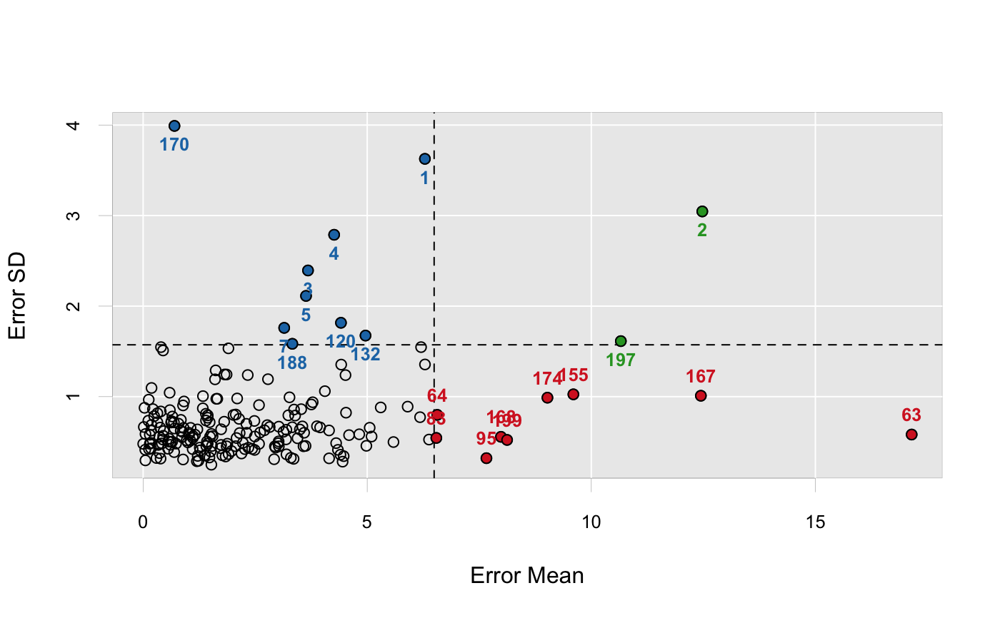
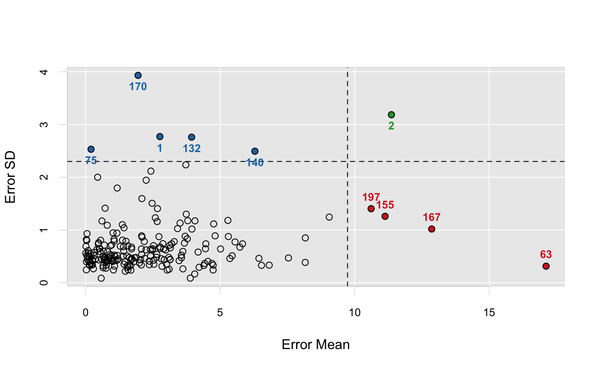

Outlier detection with ensemble partial least squares.
enpls.od(x, y, maxcomp = NULL, cvfolds = 5L, reptimes = 500L, method = c("mc", "boot"), ratio = 0.8, parallel = 1L)
| x | Predictor matrix. |
|---|---|
| y | Response vector. |
| maxcomp | Maximum number of components included within each model. If not specified, will use the maximum number possible (considering cross-validation and special cases where n is smaller than p). |
| cvfolds | Number of cross-validation folds used in each model
for automatic parameter selection, default is |
| reptimes | Number of models to build with Monte-Carlo resampling or bootstrapping. |
| method | Resampling method. |
| ratio | Sampling ratio used when |
| parallel | Integer. Number of CPU cores to use.
Default is |
A list containing four components:
error.mean - error mean for all samples (absolute value)
error.median - error median for all samples
error.sd - error sd for all samples
predict.error.matrix - the original prediction error matrix
To maximize the probablity that each observation can
be selected in the test set (thus the prediction uncertainty
can be measured), please try setting a large reptimes.
See enpls.fs for measuring feature importance with
ensemble partial least squares regressions.
See enpls.fit for fitting ensemble partial least
squares regression models.
data("alkanes") x <- alkanes$x y <- alkanes$y set.seed(42) od <- enpls.od(x, y, reptimes = 50) print(od)#> Outlier Detection by Ensemble Partial Least Squares #> --- #> Mean residual for each sample: #> [1] 2.75921773 11.36519417 2.86997847 3.72358683 2.58864423 0.69950317 #> [7] 2.47046080 0.04090356 0.72374081 0.67761648 0.60657038 0.05203462 #> [13] 4.81214619 0.48047678 0.31426341 4.45439789 1.81680825 0.00486926 #> [19] 1.40762012 2.76733128 0.25816473 0.11014460 2.76375525 0.24664065 #> [25] 0.18795164 2.89461883 0.60293011 0.54016143 3.69778413 0.84421368 #> [31] 2.40482744 0.08033139 0.65464173 0.28846939 0.96347563 1.16604993 #> [37] 2.42467651 1.80624634 2.08209599 0.64821359 0.06219722 2.36510870 #> [43] 1.08902416 2.09141868 2.06910689 1.38871463 1.16310209 2.07153015 #> [49] 2.41222206 1.99819780 1.02797377 1.09358743 6.44005724 2.66972544 #> [55] 1.18031132 0.96520499 2.91887428 3.88938152 0.93689004 0.04277856 #> [61] 0.09383582 3.13664578 17.11229300 6.53632442 0.44617481 2.72369291 #> [67] 2.83683060 0.41927300 1.57410904 1.62112809 0.11859181 1.41609908 #> [73] 0.66340508 1.53271330 0.20100807 3.47461828 1.36388771 1.47275628 #> [79] 2.03870349 1.42598923 0.21947290 0.25046323 6.82282300 0.91802223 #> [85] 2.63298282 1.68299675 1.67646979 1.56930079 0.77600240 0.57822702 #> [91] 1.03364347 4.42455671 1.06359453 3.14333266 7.53801734 1.87522128 #> [97] 3.14718740 1.28679073 1.55473026 0.81210377 1.62480053 1.55781168 #> [103] 1.07627481 0.48852462 0.52741604 1.70822777 0.11695013 0.32088398 #> [109] 3.10218596 2.17914452 2.19815151 3.41522772 3.09238815 2.52872181 #> [115] 0.69580966 0.01307271 3.61323553 0.50675263 2.09524681 4.06314768 #> [121] 1.50053126 3.56251067 0.02603732 2.52175184 0.46881633 1.17158669 #> [127] 0.35500780 0.14109849 0.02583630 4.39330939 5.83211202 3.93926189 #> [133] 1.70661275 0.73174502 3.67211046 0.15568680 1.01687679 4.73752709 #> [139] 4.75850118 6.28985938 3.00910912 0.55664806 2.53554817 3.77837005 #> [145] 0.81599912 1.00770488 4.21709646 3.29187061 0.02806380 3.95040415 #> [151] 2.81500647 2.24470051 0.16533690 1.69112925 11.12871713 2.64622693 #> [157] 2.36619343 0.80239235 3.13253142 3.73983802 1.05180495 0.75120889 #> [163] 5.55274842 0.93965402 5.44634050 0.91052763 12.86047051 8.16501444 #> [169] 5.28568842 1.94774611 1.42523305 3.51056559 3.55810920 9.05314678 #> [175] 5.73253024 3.79497529 5.01317052 0.64924425 0.77081874 2.24917960 #> [181] 2.97614143 1.73162082 4.05394871 0.78070127 4.54159467 1.20684823 #> [187] 3.03099951 2.65903955 1.45986082 0.83727406 4.74072104 0.75646839 #> [193] 4.69534977 1.36865729 3.20102779 0.18763266 10.61033130 4.46728417 #> [199] 8.16220823 3.61534939 4.17841145 2.49200986 1.05991605 5.30421423 #> [205] 2.08243043 2.47518723 5.36082689 #> --- #> Residual SD for each sample: #> [1] 2.77082522 3.18518150 0.74165858 2.23594825 1.23169974 0.42687633 #> [7] 1.50625099 0.79975392 1.41280667 0.46584217 1.17084856 0.93096232 #> [13] 0.88984994 0.75917079 0.57559100 0.64465715 0.47396718 0.56017441 #> [19] 0.68267751 0.65140968 0.41747884 0.56358621 0.67966904 0.43427716 #> [25] 0.37536436 0.64008708 0.44791500 0.59112318 0.88170164 0.41258090 #> [31] 0.63087919 0.43212128 0.50448177 0.26486222 0.71583384 0.42491843 #> [37] 2.11640004 0.40073941 0.88944036 0.32170138 0.48828519 0.41031319 #> [43] 0.50217099 1.59534185 0.33617303 0.50260003 0.94105157 0.63972291 #> [49] 0.50587685 0.37551763 0.41497134 0.42771863 0.46207727 1.40571227 #> [55] 0.51642660 0.42393378 0.43527285 0.08752688 0.45192162 0.51780544 #> [61] 0.61052739 0.43776137 0.31398455 0.32995059 2.00011552 0.87425403 #> [67] 0.31162653 0.63105402 0.24649488 0.31711494 0.49936385 0.59978816 #> [73] 0.59653589 0.50852740 2.53110721 0.41851982 1.10184218 0.21710200 #> [79] 0.43937877 0.35242335 0.33627934 0.34095574 0.33341472 0.69920856 #> [85] 0.48311083 0.23781167 0.32765431 0.70053129 0.40945258 0.08585720 #> [91] 0.24244975 0.36514882 0.79025058 0.44402145 0.46959851 0.47803736 #> [97] 0.66037588 0.69332640 0.29156760 0.42604792 0.47781693 0.32571532 #> [103] 0.31530154 0.43322187 0.64879644 0.67484355 0.40328109 0.51379190 #> [109] 0.25584801 0.78167536 0.46379337 1.02646245 0.48038341 0.42723380 #> [115] 0.71363249 0.69063925 0.59453418 0.65063662 0.86515782 1.17342811 #> [121] 0.78617936 0.47367019 0.24439560 0.70316651 0.73449508 1.79527777 #> [127] 0.44260783 0.33808668 0.81899089 0.32662542 0.73804730 2.75960043 #> [133] 0.64233354 0.47841244 0.75136350 0.32979985 0.94649800 0.24178213 #> [139] 1.11533236 2.49301466 0.35001294 0.80453705 0.35011625 0.83446145 #> [145] 0.58759196 0.40320473 0.29256353 0.77961214 0.39795562 1.01770854 #> [151] 0.45468083 0.62303222 0.40692023 0.44973569 1.25950083 0.53901537 #> [157] 0.34171577 1.08900598 0.71282202 1.29978898 0.82451430 0.44599800 #> [163] 0.77330806 0.51100098 0.51146626 0.53756880 1.01862539 0.84995332 #> [169] 1.18180361 3.93102487 1.04156903 1.13106025 0.52150688 1.24405827 #> [175] 0.67447926 1.17640208 0.64074369 0.28467185 0.33626125 1.94356528 #> [181] 0.62001275 0.44932588 0.16634723 0.40215221 0.40529902 0.45155131 #> [187] 0.23942115 1.16054612 0.39605799 0.47297038 0.33345301 0.27533596 #> [193] 0.36658302 0.80698643 0.73877079 0.55089330 1.40387322 0.73798595 #> [199] 0.38540824 0.26297673 0.58085243 0.64409232 0.52326994 0.87634496 #> [205] 0.53404341 0.62252334 0.45961173plot(od)